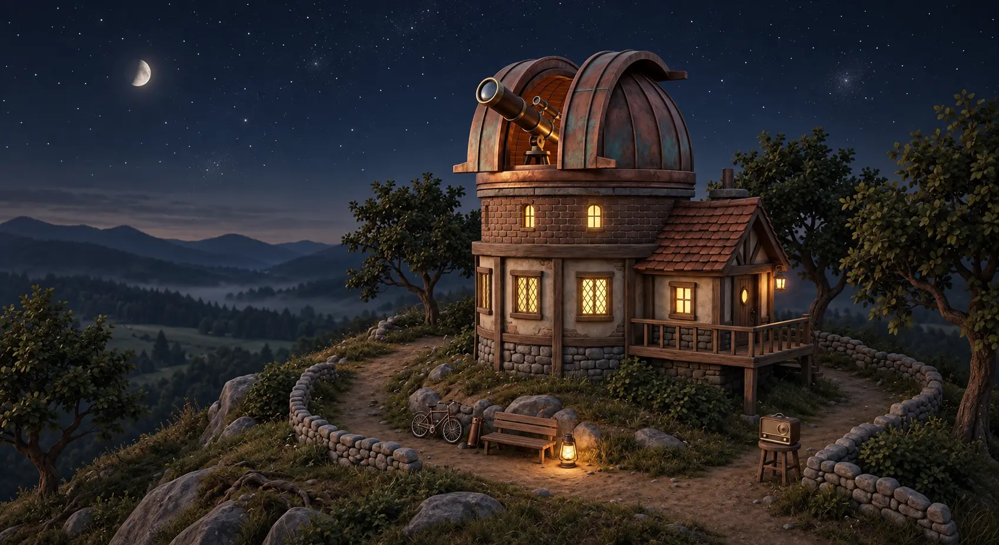
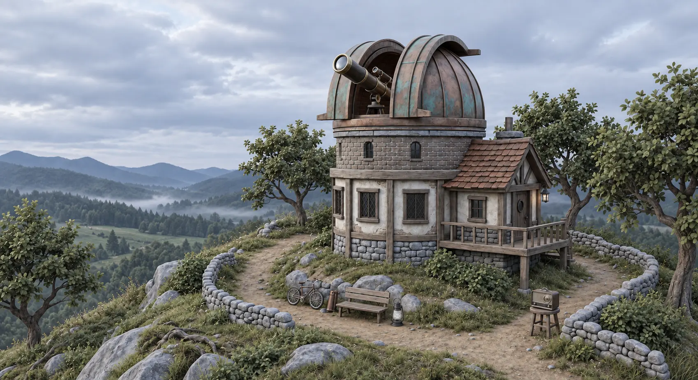

THEHILLBEYONDTHISONE
The observatory
A collection of games, tools, and small experiments.
Project journal
Explore the source and documentation for every project.
artpipelineOne illustration in. A transparent, looping game sprite out.
Cathedral SoftwareA retro interface tribute to the 1990s film The Net.
Golf, ProbablyNine little golf holes with a very loose understanding of the rules.
HydraMany listening posts. One clear view of what's happening.
Kinwild · Creature CreatorProcedural creatures with their own shapes, personalities, and ways of moving.
Kinwild · Living WorldA living miniature world of generated plants and curious creatures.
Past MidnightA love letter to the screensavers that kept old computers company.
RubiKitA modular toolkit and real-time dashboards for Anarchy Online.
SketchbookA fork of swift502's Three.js playground for characters and vehicles.
Spanish Ghost TextA local speech transcription and Spanish text-assistance experiment.
Steam License RemoverAn interactive utility for managing free Steam licenses.
What if we…A shared place to plan dates and find ideas you both love.
Woobles TrackerA small home for craft projects, progress, photos, and notes.
XanalyticsTurn local game logs into useful loot and experience metrics.
ZeroInAn Anarchy Online plugin for in-game scanning and radar overlays.